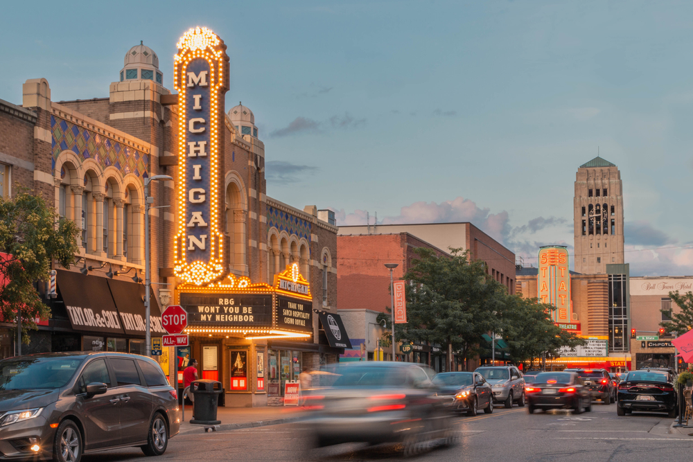
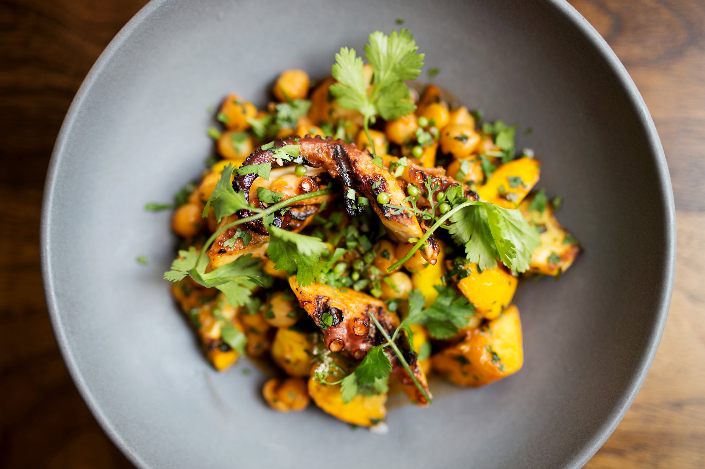

Welcome
Join us as we take you on an adventure through the greatest food city.

Ann Arbor, the vibrant city in South East Michigan, is home to the World Famous University of Michigan. Being the melting pot of global cultures, Ann Arbor is home to so many amazing restaurants and foods. Being foodies ourselves, we wanted to create a guide for all fellow food lovers on the famous restaurants, cafes, and bakeries in Ann Arbor.

Being foodies ourselves, we wanted to create a guide for all fellow food lovers on the famous restaurants, cafes, and bakeries in Ann Arbor.
With that said, enjoy this quick catalog of some of the amazing food places to stop by in Ann Arbor!


